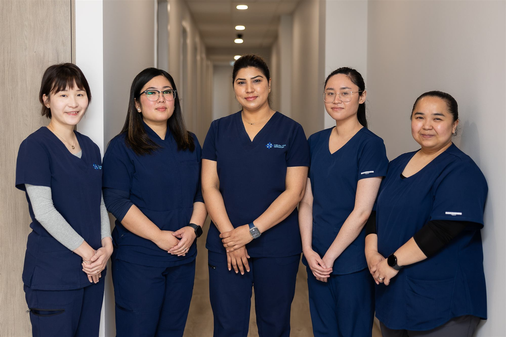

The people behind your care
GPs, nurses and a friendly reception team, caring for patients across our two sites on Whitehorse Road.

Choose a doctor to see more
Select any doctor to read their bio, see the languages they speak, their areas of interest and the procedures they perform. Every doctor offers telehealth as well as face-to-face appointments.
Doctors at 427
Our GPs at 427 Whitehorse Road, open 7 days.
Doctors at 411
Our GPs at 411 Whitehorse Road, open weekdays.
Our support team
Care is a team effort. Our nurses, allied health partners and reception team keep everything running smoothly.

Practice nurses
Registered nurses are always on site, helping with procedures, health checks, immunisations and care coordination.
Allied health partners
Allied health professionals working alongside your GP, so your care stays joined up.
Reception team
Friendly, helpful front-desk staff to guide your bookings, records and questions.
Find a time with our team
Book online, start a telehealth consult, or call reception and we'll help you find the right doctor.